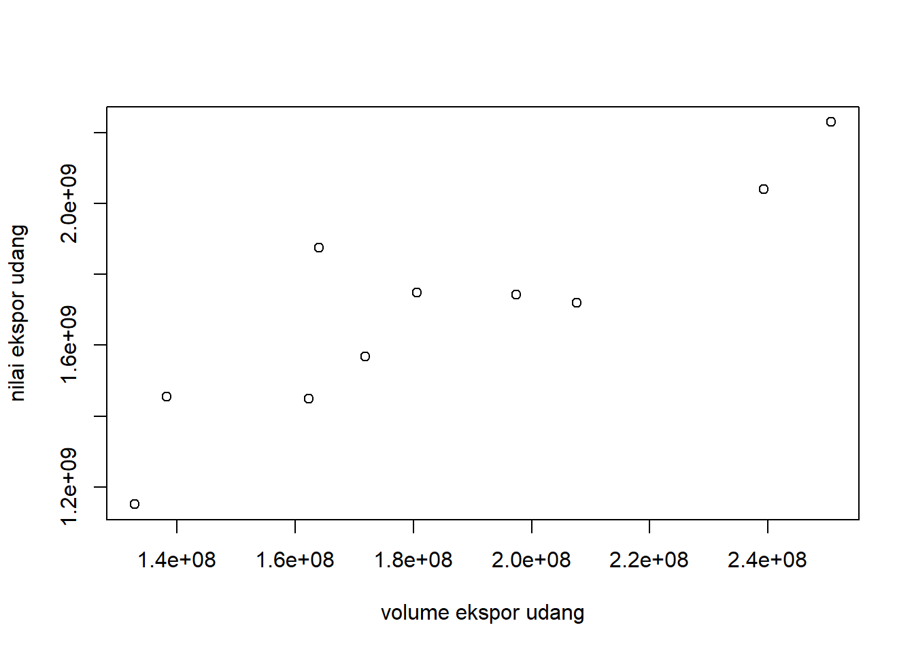

library(tidyverse)
library(readxl)ANALISIS PELUANG DAN HAMBATAN EKSPOR UDANG INDONESIA YANG BERPENGARUH TERHADAP PEREKONOMIAN INDONESIA”
Metode Penelitian Politeknik APP Jakarta
1 Pendahuluan
1.1 Latar belakang
Indonesia merupakan negara kepulauaan terbesar di dunia dengan memiliki 17.508 pulau dengan total luas wilayah 1.904.569km2 (untuk daratan: 1.811.569 km2 dan perairan: 93.000 km2) yang terbentang dari Sabang sampai Merauke. Selain memiliki kepulauan terbesar di dunia, Indonesia dianugerahkan memiliki sumber daya alam yang berlimpah. Sumber daya alam yang berlimpah menjadi peluang besar bagi Indonesia sebagai sumber pendapatan negara dan kemakmuran masyarakat.
Dalam menunjang perekonomian negara, Indonesia melakukan perdagangan internasional. Perdagangan internasional merupakan salah satu kegiatan yang memberikan banyak manfaat bagi negara-negara berkembang seperti halnya negara Indonesia (Doni dkk,2012). Perdagangan Internasional yang terjadi diantar negara karena adanya perbedaan dari sumber daya alam, sumber daya manusia, iklim, maupun perbedaan letak geografis yang dimiliki suatu negara. Sumber daya alam berlimpah yang dimiliki Indonesia menjadi peluang bagi Indonesia untuk melakukan perdagangan internasional sebesar-besarnya.
Salah satu sumber daya alam berlimpah yang dimiliki Indonesia adalah komoditas perikanan, dikarenakan Indonesia sendiri merupakan negara dengan memiliki laut yang luas. Komoditas perikanan sendiri dalam perdagangan internasional merupakan komoditas unggulan dalam pasar dunia, sehingga Indonesia melakukan ekspor besar-besaran pada komoditas perikanan. Salah satu komoditas perikanan Indonesia yang sangat diincar dan menjadi unggulan adalah komoditas udang Indonesia.
Udang Indonesia merupakan komoditas unggulan dalam pasar dunia maka dari itu komoditas udang menjadi salah satu penyumbang terbesar bagi devisa negara Indonesia. Negara yang menjadi tujuan ekspor udang Indonesia adalah negara Amerika Serikat, Uni Eropa, Jepang, China, Singapore, Malaysia, Hongkong, Korea Selatan.
Berdasarkan statistik perikanan Indonesia, sektor perikanan dan kelautan pada tahun 2021 menunjukan angka positif yaitu naik 9,69% pada kuartal meskipun pandemi Covid-19 masih melanda Indonesia, dan sektor perikanan menyumbang nilai PDB sebesar 2,83% atau senilai 188 triliun rupiah.
Dengan melihat pertumbuhan ekonomi dari sektor perikanan dan kelautan, Indonesia dalam melakukan ekspor perikanan tentunya tidak lepas dari adanya peluang maupun hambatan-hambatan yang terjadi dalam proses perdagangan. Peluang maupun hambatan yang terjadi dapat dijadikan sebagai acuan dasar melihat ekspor udang Indonesia dapat berpengaruh besar dalam perekonomian Indonesia yang berdasarkan dari volume ekspor udang dengan nilai ekspor udang yang dihasilkan.
1.2 Ruang lingkup
Berdasarkan latar belakang penelitian, maka diperlukan batasan masalah yang bertujuan untuk memfokuskan pada penelitian agar menghindari adanya pelebaran pokok permasalahan, sehingga akan menghasilkan penelitian yang menjadi lebih terarah serta tujuan penelitian dapat dicapai. Adapun batasan masalah yang dikaji dalam penelitian ini adalah komoditas udang yang menjadi penunjang kemakmuran perekonomian Indonesia melalui kegiatan perdagangan internasional yaitu ekspor, dengan memfokuskan pada peluang serta hambatan yang terjadi dalam ekspor udang Indonesia.
1.3 Rumusan masalah
Dengan melihat latar belakang dan batasan masalah pada penelitian ini, maka dapat diidentifikasikan rumusan masalah pada penelitian ini, diantaranya:
Apa yang menjadi Peluang Indonesia dalam melakukan ekspor komoditi udang di pasar internasional
Hambatan apa saja yang dihadapi Indonesia dalam melakukan ekspor komoditi udang di pasar internasional
1.4 Tujuan dan manfaat penelitian
Tujuan dalam melakukan penelitian ini adalah untuk untuk mengetahui apa saja yang menjadi peluang Indonesia dalam melakukan ekspor udang di pasar dunia sehingga komoditi udang menjadi pendorong kemakmuran ekonomi Indonesia, kemudian untuk mengetahui apa saja hambatan yang di hadapi eksportir Indonesia dalam melakukan ekspor komoditi udang di pasar dunia (negara tujuan ekspor) terutama pada negara Jepang.
Adapun manfaat yang diharapkan dalam penelitian ini adalah para pembaca yang nantinya menjadi eskportir udang Indonesia dapat mengetahui peluang yang ada dalam ekspor udang, kemudian eksportir dapat mengambil keputusan yang tepat untuk menyelesaikan hambatan yang terjadi dalam kegiatan ekspor udang, dan pemerintah dapat terus mendorong membantu para eksportir udang untuk terus melakukan ekspor besar-besaran ke negara tujuan ekspor seperti membuat kebijakan mengenai ekspor udang, memberikan pelatihan pengembangan budidaya udang ataupun menyetujui perjanjian perdagangan yang memudahkan para eksportir melakukan ekspor udang di pasar internasional. Adapun manfaat yang diharapkan dalam penelitian ini bagi penulis adalah penulis dapat menambah wawasan serta pengetahuan mengenai peluang dan hambatan dalam melakukan ekspor udang Indonesia, sehingga dapat mengetahui alasan mengapa ekspor udang Indonesia menjadi salah satu komoditi yang sangat berpengaruh besar terhadap perekonomian Indonesia.
1.5 Package
Packages yang digunakan diantaranya:
2 Studi pustaka
2.1 Teori I Perdagangan Internasional
Perdagangan internasional merupakan aspek yang sangat penting dalam mendorong pertumbuhan perekonomian negara. Perdagangan internasional adalah perdagangan yang dilakukan oleh pemerintah atau penduduk antar negara yang dimana terdapat proses menukar produk maupun jasa yang menguntungkan (Bonaraja Purba dkk. 2021). Dalam melakukan perdagangan internasional, setiap negara tidak lepas dengan alur kegiatan yang didalamnya yaitu kegiatan ekspor dan impor.
2.2 Teori II Kepabeanan, Ekspor, Impor
Kegiatan ekspor dan impor pada perdagangan internasional tidak lepas dengan pengaturan dalam kepabean Indonesia. Kepabean sendiri merupakan segala sesuatu kegiatan yang berhubungan dengan pengawasan atas lalu lintas barang yang masuk maupun yang keluar dari daerah pabean serta dilakukan pemungutan bea masuk dan bea keluar. Berdasarkan Undang – Undang Republik Indonesia Nomor 17 Tahun 2006 tentang Perubahan Atas Undang – Undang Nomor 10 Tahun 1995 tentang Kepabeanan, ekspor merupakan suatu kegiatan mengeluarkan barang dari daerah pabean Indonesia dan impor merupakan suatu kegiatan memasukan barang ke dalam daerah pabean Indoensia.
2.3 Teori III Keunggulan Absolute
Indonesia merupakan negara yang memiliki sumber daya alam berlimpah, oleh sebab ituIndonesia dapat dikatakan sebagai negara yang memiliki keunggulan absolut (absolut advantage). Teori keunggulan absolut (keunggulan mutlak) merupakan teori kaum klasik yang dikemukakan oleh Adam Smith dan David Ricardo. Menurut Adam Smith teori keunggulan absolut merupakan kemampuan suatu negara untuk menghasilkan suatu barang dan jasa per unit dengan menggunakan sumber daya yang lebih sedikit dibandingkan kemampuan negara-negara lain. Dapat dikatakan bahwa keunggulan absolut merupakan keunggulan yang dimiliki negara dalam memproduksi barang jadi dengan biaya yang lebih murah (rendah) dibandingkan dengan negara lain.
2.4 Teori IV Permintaan
Perdagangan Internasional terjadi tidak lepas dari adanya permintaan dalam suatu komoditi yang dimiliki suatu negara. Menurut Posma Sariguna menyatakan permintaan adalah suatu jumlah barang atau jasa yang ingin dibeli oleh konsumen pada tingkat harga selama periode tertentu. Dengan adanya permintaan, suatu negara dapat mengukur komoditi yang dimilikinya sebagai komoditi unggulan atau tidak, sehingga suatu negara dapat menentukan pasar tujuannya.
2.5 Teori V Kebijakan Perdagangan Internasional
Dalam memudahkan pengaturan perdagangan internasional suatu negara menetapkan kebijakan-kebijakan perdagangan internasional. Kebijakan merupakan segala tindakan yang dilakukan oleh negara maupun pemerintah, baik langsung maupun tidak langsung untuk mengatur struktur, arah, komposisi, serta bentuk perdagangan luar negeri ataupun kegiatan perdagangan, seperti penetapan atas tarif bea masuk maupun bea keluar, kuota impor, maupun larangan ekspor maupun impor, sehingga dengan melakukan penetapan kebijakan perdagangan dapat memudahkan dan memberikan kelancaran dalam proses perdagangan internasional.
2.6 Kerangka Pemikiran
Kerangka pemikiran dalam penelitian ini dilakukan dengan melalui peroses penganalisaan atau melakukan riset pada data yang dilakukan pengumpulan data terlebih dahulu sebagai kerangka utamanya yang kemudian disusun secara sistematis. Dengan data yang dikumpulkan dapat dijadikan sebuah pedoman untuk pemecahan permasalahan yang akan dihadapi. Selama proses pemecahan masalah yang dihadapi, penulis menggunakan pendekatan pada variabel-variable yang digunakan pada penelitian ini dengan melihat hubungan variabel independent terhadap variabel dependent. Variabel independet yang digunakan dalam penelitian adalah volume ekspor udang Indonesia, sedangkan variabel dependent yang digunakan adalah nilai ekspor udang Indonesia.
3 Metode penelitian
3.1 Data
Volume Ekspor Udang Indonesia Sebagai Variable X
Tahun Volume Ekspor (KG) 2012 132.793.869 2013 138.181.424 2014 164.070.082 2015 162.256.338 2016 171.882.960 2017 180.592.220 2018 197.433.608 2019 207.702.651 2020 239.282.011 2021 250.715.434 Nilai Ekspor Udang Indonesia Sebagai Variable Y
Tahun Nilai Ekspor (USD) 2012 1.151.416.246 2013 1.454.235.487 2014 1.875.173.175 2015 1.449.927.739 2016 1.567.994.739 2017 1.748.135.758 2018 1.742.119.193 2019 1.719.172.129 2020 2.040.184.255 2021 2.228.947.835
Data yang digunakan dalam penelitian ini adalah menggunakan data sekunder. Data sekunder itu sendiri adalah jenis data yang berisikan informasi yang dikumpulkan dari data yang telah ada sebelumnya yang digunakan untuk melengkapi kebutuhan dalam data penelitian. Dalam data sekunder yang digunakan yaitu data dari time series. Data time series yang digunakan dalam penilitian ini yaitu meliputi data total volume ekspor udang Indonesia tahunan dengan rentang waktu 10 tahun (tahun 2012 hingga 2021), data nilai ekspor udang Indonesia tahunan dengan rentang waktu 10 tahun (tahun 2012 hingga 2021).
Data-data yang dikumpulkan untuk penelitian ini bersumber dari Direktorat Jendral Perikanan Budidaya (DJPB), Kemetrian Kelautan dan Perikanan (KKP), Trade Map, Badan Pusat Statistik (BPS), dan Statistik-KKP dengan menggunakan periode dengan rentang waktu 10 tahun yang dimulai dari tahun 2012 hingga 2021.
3.2 Metode analisis
Penelitian ini menggunakan metode analisis deskriptif kuantitatif untuk menggambarkan secara menyeluruh penawaran udang Indonesia di pasar Internasional. Metode yang digunakan dalam menganalisis peluang maupun hambatan ekspor udang adalah regresi univariate atau Ordinary Least Square (OLS). Regresi linear univariate ini berfungsi untuk melihat hubungan antar dua variabel yang dimana adanya hanya satu variabel independent (variabel tidak terikat) sebagai input X terhadap variabel dependent (variabel terikat) sebagai output Y. Adapun variable yang diukur dalam metode regresi linear univariate ini adalah total volume ekspor udang Indonesia (2012-2021) sebagai variabel X (indepenent) terhadap nilai ekspor udang Indonesia (2012-2021) sebagai variable Y (dependent) yang digunakan sebagai acuan untuk melihat seberapa besarnya permintaan udang Indonesia di pasar internasional dengan analisis peluang maupun hambatan yang dihadapi Indonesia dalam kegiatan ekspor komoditi udang. Metode regresi univariate yang digunakan dalam analisis penelitian ini diproses pada R studio sebagai alat bantu pengolahan data dengan menggunakan package readxl dan tidyverse. Metode regresi univariate ini menggunakan pendekatan:
\[ y_{t}=\beta_0 + \beta_1 x_t+\mu_t \] di mana \(y_t\) adalah nilai ekspor dan \(x_t\) adalah volume ekspor
4 Pembahasan
4.1 Pembahasan masalah
Plot Variabel Independent (X) Terhadap Variabel Dependent (Y)
setwd("C:/Users/harto/OneDrive/Documents/Putri") dat<-read_excel("Nilai Ekspor Udang Indonesia.xlsx") plot(dat$X,dat$Y,xlab="volume ekspor udang",ylab="nilai ekspor udang")
Hasil plot tersebut adalah plot dari variabel independent (x) yang merupakan data volume ekspor udang Indonesia dengan rentang waktu 10 tahun dengan variabel dependent (y) yang merupakan data nilai ekspor udang Indonesia. Hasil plot yang didapat dengan melakukan run di RStudio yang dilakukan di kuadran kiri bawah dengan melakukan command.
Data Visual yang diperoleh adalah sebagai berikut
ggplot(data=dat,aes(x=X,y=Y)) + geom_point(color="red") + labs(title="hubungan volume ekspor dengan Nilai Ekspor", x="volume ekspor udang", y="nilai ekspor udang", caption = "Sumber: Statistik Perikanan") + theme_minimal()
- Regresi Variabel X Mempengaruhi Variabel Y
reg1<-lm(Y~X,data=dat) summary(reg1)Call: lm(formula = Y ~ X, data = dat) Residuals: Min 1Q Median 3Q Max -184868407 -80785131 -41103998 75298924 320217807 Coefficients: Estimate Std. Error t value Pr(>|t|) (Intercept) 4.078e+08 2.437e+08 1.673 0.132803 X 6.992e+00 1.295e+00 5.400 0.000646 *** --- Signif. codes: 0 '***' 0.001 '**' 0.01 '*' 0.05 '.' 0.1 ' ' 1 Residual standard error: 153200000 on 8 degrees of freedom Multiple R-squared: 0.7847, Adjusted R-squared: 0.7578 F-statistic: 29.16 on 1 and 8 DF, p-value: 0.0006461Hasil regresi tersebut merupakan regresi dari variabel indepent (x) terhadap variable dependent (y) dengan menggunakan data yang memiliki rentang waktu 10 tahun, yang dimana data tersebut dijadikan sebagai ukuran permintaan udang di pasar internasional yang berdampak pada perekonomian negara. Hasil regresi yang didapat dengan melakukan run di RStudio yang dilakukan di kuadran kiri bawah dengan melakukan command.
4.2 Analisis masalah
Berdasarkan hasil regresi yang didapatkan, maka model persamaan regresi yang dihasilkan dalam penelitian ini dapat dituliskan sebagai berikut:
Ŷ = 407,8 + 699,2X
Dengan persamaan tersebut dapat dinyatakan:
Konstanta
Berdasarkan hasil estimasti pada data model regresi terdapat nilai konstanta positif sebesar 407,8 yang menggambarkan bahwa nilai ekspor udang Indonesia ke pasar internasional mengalami peningkatan 407,8 juta kg.
Persamaan regresi menunjukan bahwa volume ekspor udang Indonesia memiliki koefisien regresi 699,2. Dengan hasil koefisien regresi 699,2 yang artinya apabila volume ekspor udang Indonesia meningkat sebesar 1000 kg maka dapat dikatakan volume ekspor udang Indonesia ke pasar internasional naik (mengalami peningkatan) sebesar 699,2 juta kg. Dengan hal tersebut dapat dikatan bahwa volume ekspor udang memiliki pengaruh yang sangat positif dan signifikan terhadap nilai ekspor udang Indonesia, sehingga dapat dikatakan apabila Indonesia melakukan ekspor besar-besaran sekalinpun dengan memfokuskan hanya ke negara tujuan ekspor maka akan meningkatkan nilai terhadap ekspor udang Indonesia.
Dengan melihat dari regresi yang dihasilkan dari setiap variabel penelitian diketahui bahwa volume ekspor udang Indonesia berpengaruh positif dan signifikan terhadap nilai ekspor udang Indonesia, hal tersebut berjalan lurus dengan peluang yang ada dalam ekspor udang Indonesia ke pasar Internasional. Dari melihat nilai ekspor udang yang dihasilkan dapat dijadikan sebuah acuan bagi pemerintah bahwa peluang yang ada dalam ekspor udang Indonesia akan menghasilkan volume ekspor udang yang besar, sehingga dapat dikatan pemerintah harus menggunakan peluang yang ada dengan semaksimal.
Melihat hasil regresi yang dihasilkan ini dapat dikatakan bahwa volume ekspor udang Indonesia selama kurung waktu 10 tahun mengalami peningkatan yang signifikan. Dengan melihat hubungan dua variabel tersebut dapat dikatakan ekspor udang Indonesia bertumbuh sangat positif walupun pastinya adanya hambatan dalam kegiatan eskpornya. Dengan hasil regresi yang ada dengan pendekatan dua variabel dapat dikatan bahwa hambatan dalam ekspor udang masih dapat diatasi oleh para eksportir maupun pemerintah.
5 Kesimpulan
Berdasarkan hasil penelitian yang dilakukan dengan menggunakan pendekatan dua variabel, maka dapat ditarik kesimpulan bahwa peluang yang ada pada Indonesia dalam ekspor udang Indonesia dapat meningkatkan volume ekspor udang secara signifikan dan menghasilkan nilai ekspor udang yang berpengaruh positif pada perekonomian Indonesia. Dapat diketahui bahwa nilai ekspor udang ke pasar internasional tumbuh meningkat 407,9 juta kg, sehingga hal tersebut dijadikan acuan Indonesia untuk Indonesia melakukan ekspor besar-besaran ke pasar Internasional yang berfokus pada negara tujuan ekspornya.
Nilai ekspor udang yang tumbuh positif bagi perekonomian Indonesia (jika dilihat dari hasil regresi) salah satu faktornya karena adanya pangsa pasar yang positif di AS. Dapat di ketahui bahwa Amerika Serikat merupakan negara utama tujuan ekspor udang Indonesia sehingga dengan pangsa pasar yang positif menjadi peluang bagi Indonesia untuk melakukan ekspor besar-besaran pada komoditi udang. Selain itu peningkatan yang terjadi didorong oleh permintaan udang dengan jenis Vaname menjadi jenis udang yang besar peminatnya di pasar internasional. Hal tersebut dikarenakan udang Vaname memiliki nilai gizi yang tinggi dibandingkan dengan jenis udang lainnya serta karakteristik yang mampu beradaptasi pada suhu rendah, mampu hidup pada salinitas yang luas dan tingkat kelangsungan hidup tinggi. Dengan perbedaan iklim maupun geografis pada setiap negara, jenis udang yang diekspor sangat berpengaruh, sehingga berdampak terhadap permintaan pada udang di pasar internasional.
Melihat pada volume dan nilai ekspor udang Indonesia, adanya hambatan pada ekspor udang Indonesia difaktori oleh adanya udang Indonesia yang belum memenuhi standar kualitas yang diminta oleh negara importir. Namun sejalan dengan adanya pasar yang besar pada jenis udang tertentu, dapat dijadikan sebuah pendorong peningkatan volume ekspor udang yang mempengaruhi nilai ekspor udang, sehingga berdampak positif bagi perekonomian negara. Hambatanpun terjadi karena negara importir udang Indonesia merupakan negara penghasil udang, sehingga Indonesia dalam melakukan ekspor ke negara importir menerima bea masuk yang besar ataupun terjadi pembatasan pada impor udang Indonesia.
6 Referensi
Aisya, L., Koeshendrajana, S., & Hartono, T. (n.d.). ANALISIS HAMBATAN PERDAGANGAN INTERNASIONAL EKSPOR UDANG INDONESIA | Aisya | Jurnal Penelitian Perikanan Indonesia. 11. Retrieved January 20, 2023, from http://ejournal-balitbang.kkp.go.id/index.php/jppi/article/view/4218
Annur, C. (2022, June 23). Nilai Ekspor Udang RI Kian Moncer di Masa Pandemi | Databoks. https://databoks.katadata.co.id/datapublish/2022/06/23/nilai-ekspor-udang-ri-kian-moncer-di-masa-pandemi
DIREKTORAT JENDERAL PENGUATAN DAYA SAING PRODUK KELAUTAN DAN PERIKANAN.(2022). Genjot Ekspor Udang, KKP Buka Lebar Akses Pembiayaan KUR. https://kkp.go.id/djpdspkp/artikel/39348-genjot-ekspor-udang-kkp-buka-lebar-akses-pembiayaan-kur
linkumkm. (2022, October 14). Kabar Baik! Inilah Potensi Ekspor Udang Vaname. linkumkm.id. https://linkumkm.id/news/detail/12526/kabar-baik-inilah-potensi-ekspor-udang-vaname
Luthfiana, N. (2021). Trenggono Bawa Sektor Perikanan Tumbuh 9,69 Persen di Triwulan Kedua 2021. https://kkp.go.id/artikel/33048-trenggono-bawa-sektor-perikanan-tumbuh-9-69-persen-di-triwulan-kedua-2021
Nurhakim, F. (2022). Potensi Ekspor Udang Indonesia ke AS | Ekonomi. https://www.gatra.com/news-515244-ekonomi-potensi-ekspor-udang-indonesia-ke-as.html
Rizaty, M. (2022, August 2). 5 Negara Tujuan Ekspor Udang Budidaya Terbesar RI | Databoks. https://databoks.katadata.co.id/datapublish/2022/02/08/5-negara-tujuan-ekspor-udang-budidaya-terbesar-ri
Untsayain, A. M., Mu’tamar, M. F. F., & Fakhry, M. (2017). Analisis Pasokan Udang di Kabupaten Sidoarjo (Studi Kasus UD Ali Ridho Group). Industria: Jurnal Teknologi dan Manajemen Agroindustri, 6(3), Article 3. https://doi.org/10.21776/ub.industria.2017.006.03.2